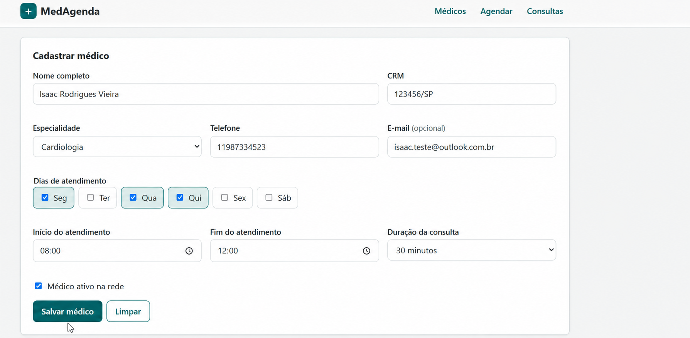
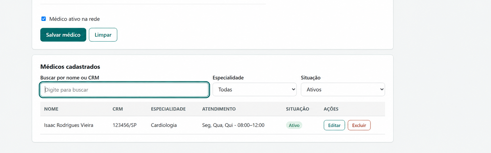
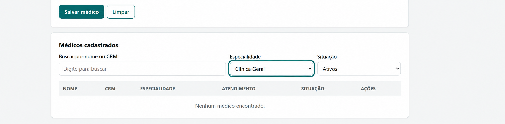
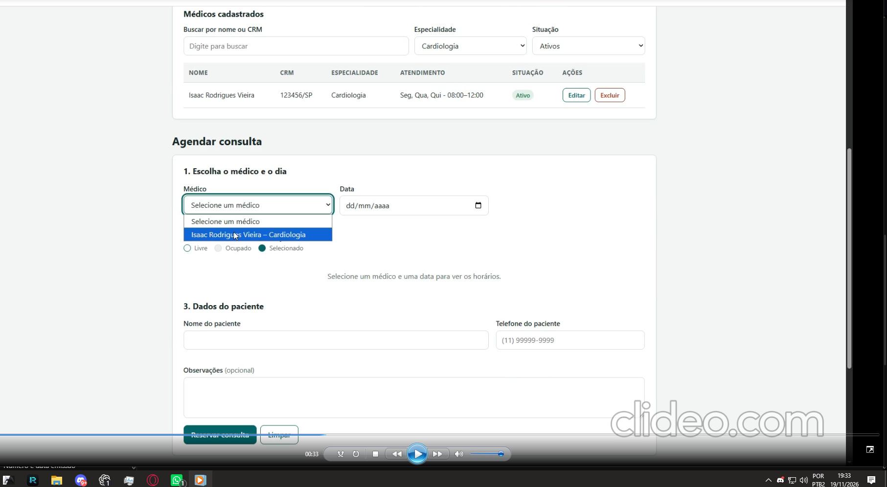
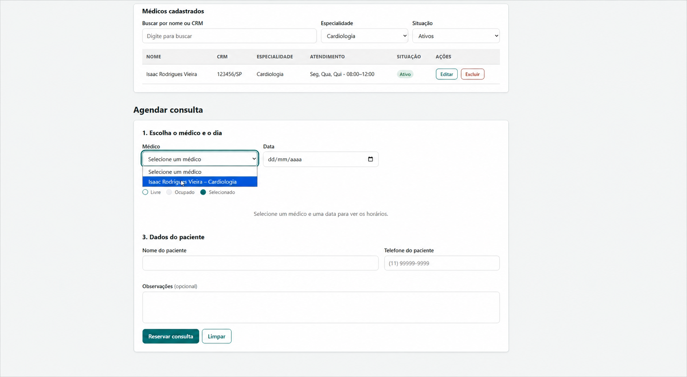
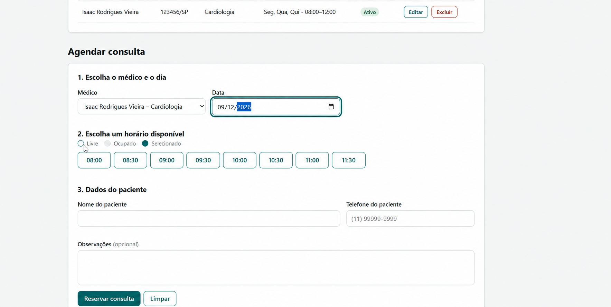
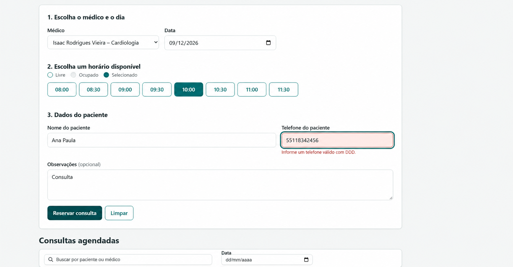
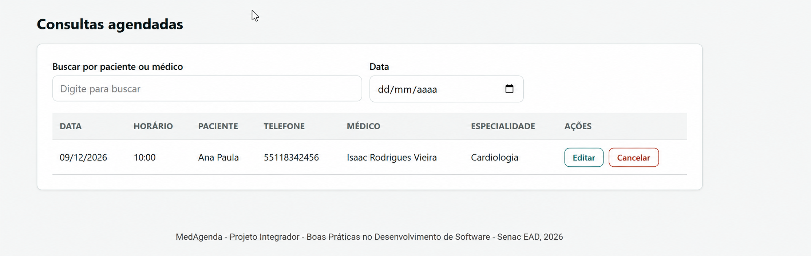

O MedAgenda é uma aplicação web para cadastrar médicos credenciados e agendar consultas em pequenas clínicas e cooperativas médicas. Foi construída com HTML5, CSS3 e JavaScript puro, e os dados ficam salvos no próprio navegador por meio do localStorage. A aplicação atende a cinco requisitos funcionais: gerenciar médicos (RF01), pesquisar médicos por nome, CRM, especialidade e situação (RF02), visualizar a agenda de horários (RF03), realizar agendamentos (RF04) e armazenar os dados no navegador (RF05).
Este documento reúne as boas práticas de desenvolvimento de software efetivamente aplicadas pelo grupo durante a 2ª etapa do projeto, cada uma acompanhada do arquivo ou trecho onde pode ser conferida. Também apresenta os prints das principais telas da aplicação em funcionamento, a tabela completa dos testes realizados e, ao final, os pontos de melhoria encontrados na revisão e a conclusão do grupo.
As tarefas da 2ª etapa foram divididas assim entre o grupo:
| Ordem | Período | Tarefa | Responsável | Dependência |
|---|---|---|---|---|
| 1 | 04/11 a 07/11 | Estrutura inicial do front-end (index.html e style.css) | Felipe | Início do projeto |
| 2 | 08/11 a 14/11 | Lógica principal JS (cadastro, lista, LocalStorage) | Vanderson | Estrutura HTML/CSS |
| 2 | 08/11 a 14/11 | Lógica complementar JS (edição, exclusão, pesquisa e validação) | Nicolas | Lógica principal e HTML |
| 3 | 15/11 a 18/11 | Tabela de testes funcionais, prints e/ou vídeo | Isaac | Lógica JS e front-end finalizados |
| 4 | 19/11 a 21/11 | Documento PDF com as boas práticas aplicadas e a conclusão do projeto | Rubia | Código e testes finalizados |
| 5 | 22/11 a 23/11 | Apresentação final e consolidação do PDF | Felipe | Documento finalizado |
| 5 | 23/11 | Envio oficial do PDF no AVA (até 23h59) | Felipe e todo o grupo | Aprovação final do PDF pelo grupo |
| Geral | Até 23/11 | Registro contínuo das atividades da 2ª etapa no blog do grupo | Rubia | Acompanhamento das tarefas |
Todo o código está no repositório Senac-09/medagenda, o que garante histórico das alterações, autoria de cada mudança e possibilidade de voltar a uma versão anterior. O histórico mostra a evolução do trabalho: estrutura do front-end (08/11), lógica de cadastro e persistência (12/11), edição, exclusão, pesquisa, validação e agendamento (12/11 a 14/11) e documentação dos testes (16/11).
O grupo combinou trabalhar em uma branch por tarefa e integrar à main por Pull Request. Isso foi seguido nas duas entregas de JavaScript:
feature/cadastro-medicos → PR #1 (Vanderson), revisado e aprovado por Nicolas antes do merge;feat/edicao-exclusao-pesquisa-validacao → PR #2 (Nicolas).Trabalhar em branches separadas permitiu que Vanderson e Nicolas desenvolvessem em paralelo, no mesmo período, sem sobrescrever o trabalho um do outro.
.editorconfig: força UTF-8, fim de linha LF, indentação de 2 espaços, remoção de espaços sobrando e linha final em todos os editores do grupo. Assim, os diffs mostram só mudanças reais, e não diferenças de formatação entre computadores..gitignore: impede que arquivos do sistema (.DS_Store, Thumbs.db), configurações pessoais de editor (.vscode/, .idea/) e dependências (node_modules/) entrem no repositório.Antes de qualquer linha de JavaScript, a tarefa de estrutura do front-end publicou no README um “Mapa de IDs” (quais elementos existem no HTML e para que servem), as classes de estado que o JS liga e desliga e um modelo de dados sugerido para o LocalStorage. Esse contrato permitiu que as tarefas seguintes avançassem sem depender de conversas a cada passo, e o README pede explicitamente: “Não renomeie sem avisar o grupo”.
O grupo definiu convenções no README e elas aparecem de forma consistente no código:
carregarMedicos, horarioOcupado, renderizarHorarios, validarConsulta. O nome já diz o que a função faz, o que dispensa boa parte dos comentários.form-medico, grade-horarios).form__campo, btn--primario, horario--ocupado.CHAVE_MEDICOS, CHAVE_CONSULTAS).is- para classes de estado (is-hidden, is-invalido, is-editando), separando visualmente o que é estilo fixo do que muda em tempo de execução.app.js e no style.css, com o nome do responsável por cada bloco, facilitando a leitura e a manutenção.Não há style="" nem onclick="" no index.html: estrutura fica no HTML, aparência no style.css e comportamento no app.js. Cada camada pode ser alterada sem quebrar as outras.
A página usa header, nav, main, section e footer, e as tabelas têm caption e cabeçalhos com scope="col". Isso dá significado à estrutura para navegadores, buscadores e tecnologias assistivas.
<label for> associado;role="status" e aria-live="polite", para que o leitor de tela anuncie sucesso e erro;aria-invalid="true" e os botões de horário usam aria-pressed para indicar a seleção;lang="pt-BR", foco visível no CSS e respeito a prefers-reduced-motion.As linhas das tabelas e os botões de horário são definidos em elementos <template> no HTML. O JavaScript apenas clona o modelo e preenche os campos marcados com data-campo, sem montar HTML em strings.
:root. Trocar a cor principal do sistema exige alterar uma única linha.data-rotulo para exibir o nome da coluna; pontos de quebra para tablet e computador ampliam o layout.O arquivo começa com "use strict", que transforma erros silenciosos em erros visíveis. O código usa const por padrão e let apenas quando a variável precisa mudar (por exemplo, as listas medicos e consultas); não há var.
Cada função faz uma coisa: carregarMedicos lê, salvarMedicos grava, validarMedico valida, filtrarMedicos filtra e renderizarMedicos desenha a tabela. Funções utilitárias como horarioParaMinutos, minutosParaHorario e formatarDataConsulta isolam conversões e podem ser reaproveitadas.
Leitura e gravação no localStorage ficam dentro de try/catch. Se os dados estiverem corrompidos, a aplicação recomeça com uma lista vazia em vez de travar; se a gravação falhar, o usuário recebe uma mensagem de erro e o estado em memória não é alterado. O código também confere com Array.isArray se o conteúdo lido é realmente uma lista.
Inclusões, edições e exclusões criam uma nova lista ([...medicos, novoMedico], map, filter), salvam essa lista e só então substituem a lista em memória. Assim, a tela e o armazenamento nunca ficam em estados diferentes quando ocorre uma falha.
O HTML declara required e maxlength, mas os formulários usam novalidate e a validação real é feita no JavaScript, com mensagens claras em português ao lado de cada campo:
123456/SP (expressão regular) e sem duplicidade;O erro de um campo some assim que o usuário volta a digitar nele, o que melhora a experiência de uso.
Os dados digitados pelo usuário são exibidos sempre com textContent (nunca innerHTML). Mesmo que alguém digite uma tag HTML no nome do paciente, ela aparece como texto e não é executada. Essa é a principal defesa contra ataques de XSS em aplicações que mostram dados informados pelo usuário.
Em vez de registrar um evento em cada botão “Editar” e “Excluir”, há um único addEventListener no <tbody> de cada tabela e na grade de horários. O código identifica o botão clicado com closest() e o registro pelo data-id da linha. Isso funciona mesmo para linhas criadas depois e evita acumular eventos a cada redesenho.
crypto.randomUUID(), sem risco de repetição;O README alertou que new Date("2026-11-12") é interpretado em UTC e pode cair no dia anterior no Brasil. O código seguiu o alerta: usa new Date(`${data}T00:00:00`) (horário local) para descobrir o dia da semana e monta a data de hoje com os componentes locais para impedir agendamentos no passado.
Excluir médico e cancelar consulta pedem confirmação. Toda operação termina com uma mensagem de sucesso ou de erro, e o formulário volta ao modo “cadastro” depois de salvar ou cancelar uma edição.
O README.md explica como rodar o projeto (basta abrir o index.html), a estrutura de pastas, onde cada requisito aparece na tela, o cronograma, o mapa de IDs, as classes de estado, o modelo de dados e as convenções do grupo. Qualquer pessoa nova consegue entender e contribuir lendo um único arquivo.
Na tarefa de testes, foi criada a pasta testes/ com uma matriz de 28 casos de teste cobrindo os cinco requisitos (11 para RF01, 4 para RF02, 3 para RF03, 9 para RF04 e 1 para RF05), incluindo cenários de erro como CRM duplicado, data passada e horário ocupado. Cada caso tem procedimento, resultado esperado, campo para o resultado obtido e evidência. Como evidências, há a gravação em vídeo da execução (testes/evidencias/testes-funcionais-isaac.mp4) e capturas de tela dos casos TF01 (cadastro de médico), TF14 (filtro por especialidade), TF16 (grade de horários), TF19 (consulta agendada) e TF23 (validação do telefone do paciente), na mesma pasta. Os prints estão reproduzidos na seção 8, e a tabela completa dos testes, na seção 9.
Segundo o responsável pela execução, os 28 casos foram executados e aprovados, sem falhas encontradas:
| Requisito | Funcionalidade | Casos | Aprovados |
|---|---|---|---|
| RF01 | Cadastro, edição, exclusão e validação de médicos | 11 | 11 |
| RF02 | Pesquisa e filtros de médicos | 4 | 4 |
| RF03 | Agenda e horários disponíveis | 3 | 3 |
| RF04 | Agendamento, edição e cancelamento de consultas | 9 | 9 |
| RF05 | Persistência com LocalStorage | 1 | 1 |
| Total | 28 | 28 |
Os três pontos de atenção levantados na leitura do código também foram verificados e aprovados: a edição de uma consulta mantém o horário original sem exigir nova seleção; a exclusão de um médico remove as consultas vinculadas a ele; e o sistema bloqueia agendamentos em data passada ou em horário já reservado.
Uma boa prática importante da documentação de testes é a transparência sobre a origem dos resultados: o relatório separa o que foi relatado pelo responsável, o que aparece nas evidências visuais e o que foi identificado na leitura do código, sem apresentar suposições como fatos comprovados.
As imagens a seguir foram capturadas durante a execução dos testes funcionais e mostram as principais telas da aplicação em funcionamento: cadastro e listagem de médicos, pesquisa com filtros, agenda de horários e agendamento de consultas. Todos os dados usados são fictícios. A gravação em vídeo da execução está no repositório, em testes/evidencias/testes-funcionais-isaac.mp4.








A tabela abaixo traz os 28 casos de teste funcional executados na aplicação, com o procedimento, o resultado esperado e o status. Nos testes de erro (CRM inválido, data passada, horário ocupado etc.), a mensagem de validação exibida pelo sistema é o resultado esperado, e não uma falha. A coluna “Evidência” indica a figura da seção 8 relacionada ao caso; os demais casos estão registrados no vídeo de execução. A versão completa, com o resultado obtido em cada caso, está em testes/testes-funcionais.md.
| ID | Req. | Cenário | Procedimento | Resultado esperado | Status | Evidência |
|---|---|---|---|---|---|---|
| TF01 | RF01 | Cadastrar médico válido | Preencher nome, CRM 123456/SP, especialidade, telefone com DDD, dia, início 08:00, fim 12:00; salvar | Médico aparece na lista e mensagem de sucesso | Aprovado | Fig. 1, Fig. 2 |
| TF02 | RF01 | Nome obrigatório | Deixar nome vazio e preencher os demais campos válidos; salvar | Exibir erro de nome; não cadastrar | Aprovado | — |
| TF03 | RF01 | CRM inválido | Informar CRM 123/SP e demais campos válidos; salvar | Exibir erro de formato do CRM | Aprovado | — |
| TF04 | RF01 | CRM duplicado | Cadastrar médico; tentar cadastrar outro com mesmo CRM | Impedir duplicidade e exibir erro | Aprovado | — |
| TF05 | RF01 | Telefone inválido | Informar telefone com menos de 10 dígitos; salvar | Exibir erro de telefone | Aprovado | — |
| TF06 | RF01 | E-mail inválido | Informar email sem @ e salvar | Exibir erro de e-mail | Aprovado | — |
| TF07 | RF01 | Dia obrigatório | Não marcar dia de atendimento; salvar | Exibir erro de dias | Aprovado | — |
| TF08 | RF01 | Faixa horária inválida | Início 12:00, fim 08:00; salvar | Exibir erro no horário final | Aprovado | — |
| TF09 | RF01 | Editar médico | Cadastrar médico; clicar Editar, alterar telefone e salvar | Atualizar registro sem duplicar | Aprovado | — |
| TF10 | RF01 | Excluir médico | Cadastrar médico; clicar Excluir e confirmar | Remover médico da listagem | Aprovado | — |
| TF11 | RF01 | Cancelar exclusão | Clicar Excluir e cancelar confirmação | Manter médico | Aprovado | — |
| TF12 | RF02 | Busca por nome | Cadastrar dois médicos; pesquisar nome de um | Mostrar apenas médico correspondente | Aprovado | — |
| TF13 | RF02 | Busca por CRM | Pesquisar CRM cadastrado | Mostrar médico correspondente | Aprovado | — |
| TF14 | RF02 | Filtro de especialidade | Cadastrar médicos de especialidades diferentes; filtrar | Mostrar somente especialidade escolhida | Aprovado | Fig. 3, Fig. 4 |
| TF15 | RF02 | Filtro ativo/inativo | Cadastrar médico inativo; alternar filtro de situação | Mostrar registros conforme situação | Aprovado | — |
| TF16 | RF03 | Agenda por dia | Cadastrar médico para segundas 08:00–10:00, duração 30; selecionar segunda futura | Mostrar horários 08:00, 08:30, 09:00, 09:30 | Aprovado | Fig. 5, Fig. 6 |
| TF17 | RF03 | Dia sem atendimento | Selecionar dia não marcado no cadastro do médico | Exibir mensagem de indisponibilidade | Aprovado | — |
| TF18 | RF03 | Médico inativo | Cadastrar médico inativo e abrir seleção de agendamento | Médico não aparece como opção | Aprovado | — |
| TF19 | RF04 | Agendar consulta válida | Selecionar médico ativo, data futura atendida, horário livre e paciente/telefone válidos; reservar | Consulta aparece na tabela | Aprovado | Fig. 8 |
| TF20 | RF04 | Horário ocupado | Agendar consulta; voltar à mesma data e médico | Horário reservado fica indisponível | Aprovado | — |
| TF21 | RF04 | Data passada | Selecionar data anterior à atual e tentar reservar | Exibir erro e impedir agendamento | Aprovado | — |
| TF22 | RF04 | Paciente obrigatório | Deixar paciente vazio; tentar reservar | Exibir erro de paciente | Aprovado | — |
| TF23 | RF04 | Telefone do paciente inválido | Informar telefone curto; tentar reservar | Exibir erro de telefone | Aprovado | Fig. 7 |
| TF24 | RF04 | Editar consulta | Agendar consulta; clicar Editar, alterar paciente e salvar | Atualizar consulta sem duplicar | Aprovado | — |
| TF25 | RF04 | Cancelar consulta | Agendar consulta; clicar Cancelar e confirmar | Consulta removida; horário liberado | Aprovado | — |
| TF26 | RF04 | Busca de consultas | Agendar duas consultas; pesquisar paciente ou médico | Filtrar corretamente | Aprovado | — |
| TF27 | RF04 | Filtro de data | Agendar consultas em datas diferentes; filtrar uma data | Mostrar apenas consultas da data | Aprovado | — |
| TF28 | RF05 | Persistência LocalStorage | Cadastrar médico e consulta; recarregar página | Dados permanecem disponíveis | Aprovado | — |
Resultado geral: 28 casos executados, 28 aprovados, 0 reprovados, 0 bloqueados.
| Boa prática | Onde conferir | Benefício |
|---|---|---|
| Versionamento com Git/GitHub | Histórico do repositório | Rastreabilidade e segurança |
| Branch por tarefa + Pull Request | PR #1 e PR #2 | Trabalho em paralelo |
| Revisão de código | PR #1 aprovado por outro integrante | Menos erros na main |
| Padronização do editor | .editorconfig | Formatação uniforme |
| Arquivos ignorados | .gitignore | Repositório limpo |
| Convenções de nomes (kebab, BEM, camelCase) | README, index.html, style.css, app.js | Código legível |
| Separação HTML/CSS/JS | Sem style/onclick no HTML | Manutenção isolada |
| HTML semântico e acessível | index.html (labels, aria, caption, scope) | Inclusão e usabilidade |
| Variáveis CSS e mobile-first | style.css, seções 1 e 6 | Consistência e responsividade |
"use strict", const/let | app.js, início do arquivo | Erros detectados cedo |
| Funções de responsabilidade única | carregar*, salvar*, validar*, renderizar* | Reuso e clareza |
try/catch na persistência | carregarMedicos, salvarConsultas etc. | Aplicação não trava |
| Validação com mensagens por campo | validarMedico, validarConsulta | Dados corretos |
Saída com textContent | preencherCampo, renderizarConsultas | Proteção contra XSS |
| Delegação de eventos | Listeners nos <tbody> e na grade | Desempenho e simplicidade |
| IDs únicos e integridade | crypto.randomUUID(), excluirMedico | Dados consistentes |
| Datas no fuso local | obterDiaSemana, validarConsulta | Dia da semana correto |
| Documentação | README.md | Entrada rápida no projeto |
| Testes funcionais documentados | testes/testes-funcionais.md, vídeo e prints em testes/evidencias/ | Qualidade verificável |
Revisar o próprio trabalho também é uma boa prática. Na leitura do repositório para este documento, o grupo encontrou os pontos abaixo. Nenhum deles impedia o funcionamento da aplicação, e a maior parte já foi corrigida por Pull Request.
| Ponto | Situação encontrada | O que foi feito |
|---|---|---|
| Acentuação nas mensagens | Parte dos textos exibidos ao usuário estava sem acento (“Medico cadastrado”), parte com (“Consulta agendada”). | Corrigido. Todas as mensagens passaram a usar acentuação correta. |
| Modelo de dados × README | O código usa diasAtendimento, horaInicio, horaFim e duracaoConsulta; o README sugeria dias, inicio, fim e duracao. | Corrigido. O README agora descreve os campos que o código grava de fato. |
| Logs de depuração | Havia console.log de desenvolvimento que exibiam a lista de médicos no console. | Corrigido. Os logs foram removidos; ficaram só os console.error do tratamento de erros. |
| Código repetido | carregarMedicos/carregarConsultas e salvarMedicos/salvarConsultas são quase iguais. | Melhoria futura: criar funções genéricas lerLista(chave) e gravarLista(chave, lista). |
| Resultados dos testes | A matriz de 28 casos ainda não tinha os resultados preenchidos. | Concluído. Os 28 casos foram registrados como aprovados pelo responsável pelos testes. |
O MedAgenda cumpriu o objetivo de oferecer, sem instalação e sem servidor, um sistema simples para cadastrar médicos credenciados, consultar sua disponibilidade e agendar consultas, com os dados preservados no navegador. Os cinco requisitos funcionais definidos na 1ª entrega estão implementados no código da branch main, e os 28 casos de teste funcional foram registrados como aprovados, sem falhas encontradas.
Mais do que o resultado final, o projeto mostrou na prática por que as boas práticas existem. O contrato de IDs e as convenções escritas no README permitiram que cinco pessoas trabalhassem em partes diferentes sem se atrapalhar; o uso de branches e Pull Requests deixou que duas partes do JavaScript fossem desenvolvidas ao mesmo tempo; e o .editorconfig manteve o código com a mesma cara, independentemente de quem o escreveu. No código, escolhas como validação com mensagens claras, try/catch no armazenamento, textContent no lugar de innerHTML e cuidado com o fuso horário mostram preocupação com o usuário, com a segurança e com a confiabilidade dos dados.
O grupo também aprendeu que a documentação precisa acompanhar o código: o modelo de dados mudou durante o desenvolvimento e o README só foi ajustado depois, na revisão feita para este documento. Essa mesma revisão corrigiu a acentuação das mensagens e removeu os logs de depuração, mostrando que revisar o próprio trabalho faz parte de entregar com qualidade.
Como evolução futura, a aplicação poderia ganhar um back-end com banco de dados para permitir o acesso de vários usuários e dispositivos, autenticação, envio de lembretes aos pacientes e testes automatizados das funções de validação e de cálculo de horários.